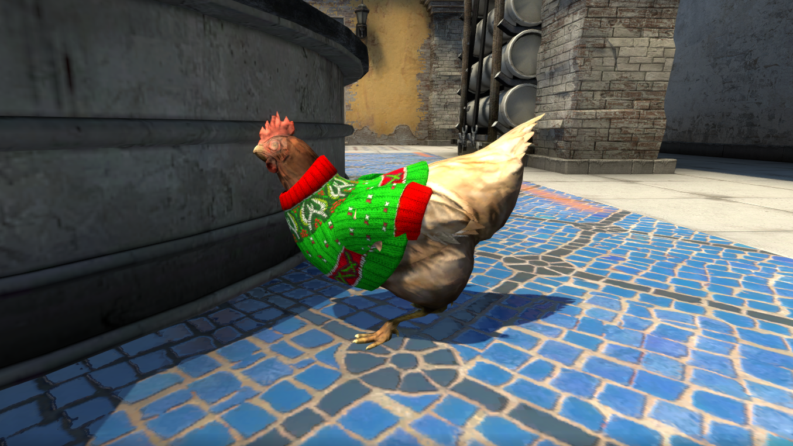

ANNONCES :
Welcome to the Danger Zone

Introducing Danger Zone — a fast-paced battle royale game mode built on CS:GO’s tactical gameplay where players use their wits, skill, and resources to fight to the finish. Play solo, or work together as a squad of two or three!
CS:GO is now FREE TO PLAY
So there’s never been a better time to bring in your friends.
All players who played CS:GO before today’s update will receive a commemorative Loyalty Badge they can display on their profile. You were there from the beginning, so show it off! Additionally, all existing CS:GO players have had their accounts upgraded to Prime Status.
As before, Prime Status matches you with other Prime Status players. Additionally, your Prime Status will give you access to the new Souvenir MP5-SD | Lab Rats (available by earning XP while playing Danger Zone matches) and the all new Danger Zone Case.
Danger Zone Case
The Danger Zone Case features 17 community-designed weapon finishes, and the Horizon knives as rare special items. Click here for more details.
A new game mode, a new case, and CS:GO is free. What are you waiting for?
GO! GO! GO!
Valve doled out nearly six months' worth of bans after CS:GO went free to play

Counter-Strike: Global Offensive had one of its best ever months after going free to play, and a record number of VAC bans were doled out on Steam as a consequence. Over 600,000 accounts received VAC bans in December, with the first wave of bans happening days after CS:GO shed its price.
Spotted by Nors3 on Twitter, five waves crushed naughty players throughout the month. Hundreds of games use Valve’s anti-cheat system, which ostensibly (if not always in reality) detects cheats and automatically bans the account in question from playing on VAC protected servers, but after CS:GO went free to play, the number of bans sky-rocketed.
In November, only 103,743 accounts were banned, according to SteamDB. That’s around six times fewer than December, and it was a pretty standard month. The number of bans in a month has never broken 200,000 in 15 years, so it’s a significant leap to get past 600,000.
The move to free to play and the addition of a battle royale mode drew the ire of some existing players, who then review-bombed the game. Things have settled down since the initial reaction, however, with recent positive reviews outweighing the negative ones.
Counter-Strike: Global Offensive Christmas is go go go
We all know the coming of Christmas means the goose is getting fat, but what about the chicken? She’s warm and cosy, as Counter-Strike: Global Offensive has kicked off its festivities by giving chickens wee Christmas jumpers. These jumpers are #2 on the definitive ranking of CS:GO chicken costumes so that’s certainly something to celebrate. Other Christmas festivities include piles of snowballs in spawn points to lob at folks, the return of Militia’s snowy variant, giftwrapped C4, and a new coin trinket for veterans who’ve been Counter-Striking for ten years. But mostly it’s about the chickens.